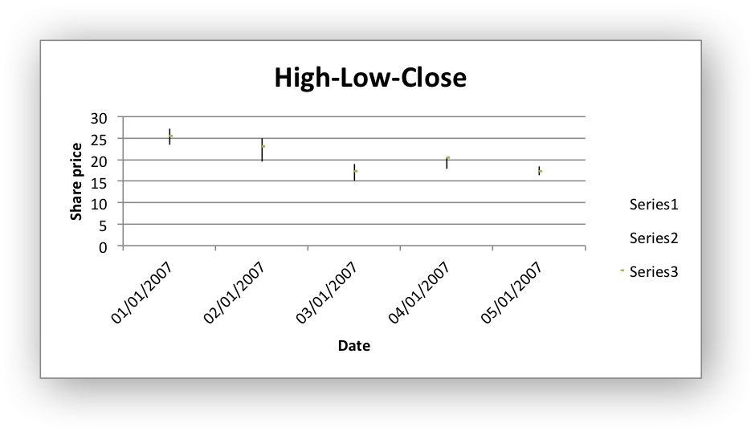

Example: Stock Chart
Example of creating and Excel HiLow-Close Stock chart.
Chart 1 in the following example is:
{kind=link}
#######################################################################
#
# An example of creating Excel Stock charts with Python and XlsxWriter.
#
# Copyright 2013, John McNamara, jmcnamara@cpan.org
#
from datetime import datetime
from xlsxwriter.workbook import Workbook
workbook = Workbook('chart_stock.xlsx')
worksheet = workbook.add_worksheet()
bold = workbook.add_format({'bold': 1})
date_format = workbook.add_format({'num_format': 'dd/mm/yyyy'})
chart = workbook.add_chart({'type': 'stock'})
# Add the worksheet data that the charts will refer to.
headings = ['Date', 'High', 'Low', 'Close']
data = [
['2007-01-01', '2007-01-02', '2007-01-03', '2007-01-04', '2007-01-05'],
[27.2, 25.03, 19.05, 20.34, 18.5],
[23.49, 19.55, 15.12, 17.84, 16.34],
[25.45, 23.05, 17.32, 20.45, 17.34],
]
worksheet.write_row('A1', headings, bold)
for row in range(5):
date = datetime.strptime(data[0][row], "%Y-%m-%d")
worksheet.write(row + 1, 0, date, date_format)
worksheet.write(row + 1, 1, data[1][row])
worksheet.write(row + 1, 2, data[2][row])
worksheet.write(row + 1, 3, data[3][row])
worksheet.set_column('A:D', 11)
# Add a series for each of the High-Low-Close columns.
chart.add_series({
'categories': '=Sheet1!$A$2:$A$6',
'values': '=Sheet1!$B$2:$B$6',
})
chart.add_series({
'categories': '=Sheet1!$A$2:$A$6',
'values': '=Sheet1!$C$2:$C$6',
})
chart.add_series({
'categories': '=Sheet1!$A$2:$A$6',
'values': '=Sheet1!$D$2:$D$6',
})
# Add a chart title and some axis labels.
chart.set_title ({'name': 'High-Low-Close'})
chart.set_x_axis({'name': 'Date'})
chart.set_y_axis({'name': 'Share price'})
worksheet.insert_chart('E9', chart)
workbook.close()